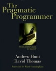
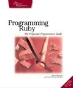
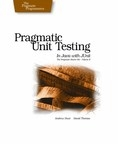
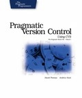

Toolshed Technologies
Andy Hunt. Author, Publisher,
Programmer, Musician.
Published Books
 The Pragmatic Programmer 20th Anniversary Edition:
The Pragmatic Programmer 20th Anniversary Edition:
your journey to mastery
by Andrew Hunt and David Thomas
This new 20th Anniversary Edition offers a fresh look at the modern development landscape, cutting through the “business as usual” and tired advice from the net to help guide you through the next twenty years and beyond. Featuring new tips, new topics, and revisions throughout, you don’t want to miss this one.
 Conglommora Found
Conglommora Found
by Andy Hunt
NEW Sequel to Conglommora. Charlie and his son thought their adventures were over, as they settled into the shape of their new lives on Conglommora. But things get complicated as Alain risks his life to find answers to the secrets of their world, and their very world gets a lot larger than anyone thought.
Conglommora
by Andy Hunt
Chill sci fi novel. A stranger with an ancient agenda plummets the known world into an epic adventure across the galaxy…

Teaches kids (of any age ;) how to program in Java, using Minecraft plugins as the programming environment.

Improve your thinking and learning skills, boost your creativity, and invest in your most important asset: your mind.

The Pragmatic Programmer:
From Journeyman to Master
by Andrew Hunt and David Thomas
The seminal classic that started it all. Still on most top-ten lists of best programmer books.
 Practices of an Agile Developer
Practices of an Agile Developer
by Venkat Subramaniam and Andy Hunt
My friend Venkat had this great idea for a book: the personal practices, habits, and approaches that really work. Good stuff.
Pragmatic Unit Testing
in C# with NUnit
by Andy Hunt and Dave Thomas
The C# version of the popular unit testing book.

Programming Ruby:
The Pragmatic Programmer's Guide
by Dave Thomas and Andy Hunt
Back at the turn of the century, Dave and I were actively looking for a better language. I was using object-oriented Perl, which was a promising idea, but severely flawed in practice. Dave found this thing called Ruby from Japan, and we decided to write a book on it to help popularize the language. The rest, as they say, is history.

Pragmatic Unit Testing
in Java with JUnit
by Andy Hunt and Dave Thomas
Part of the original trio of Starter Kit books, this was our bedrock ode to unit testing back in 2003. Jeff Langr has updated this title in 2015 to Java 8, keeping us up with modern times.

Pragmatic Version Control
with CVS
by Dave Thomas and Andy Hunt
Part of the original trio of Starter Kit books: you can’t do anything without version control. No one should be using CVS anymore—we’ve got more modern books using Git. But this was the Starter Kit at the time: Version Control, Unit Testing, and Automation (written by Mike Clark).
Latest News
-
New article: The Limits of Process
January 25, 2022 -
New article: Habits vs. Practices
January 5, 2022 -
New novel: Weatherly Hall
August 10, 2021 - List All News...
Recent Articles
-
The Limits of Process
January 25, 2022 -
Habits vs. Practices
January 5, 2022 -
Why Are There So Many Misconceptions Around Agile?
November 20, 2020 - List All Articles...
Upcoming and Recent Appearances
- Private Keynote, Fortune 500 company. Sep 30, 2020
- TDev Conference Keynote. Oct 3, 2020
- Private Keynote, Large Venture Capital firm. Oct 20, 2020
- DevOps Summit Keynote. Nov 7, 2020
- AgileMovement.it Keynote Nov 14, 2020
- Empowering Agile Fireside Chat, Feb 25, 2021
Email schedule@toolshed.com to book Andy for your next keynote or session.